| 日付 | 2017年9月24日（日） |
|---|---|
| 山域 | 大菩薩 |
| メンバー | 家族（妻、長女・6歳、長男・4歳） |
| 山行形態 | 子連れ日帰り |
| アクセス | 車 |
| ルート (Map) | 勝沼堰堤駐車場 (8:35) - (8:49) 登山口 - (9:34) 鉄塔 - (11:24) 甲州高尾山 (12:23) - (14:09) 登山口 - (14:34) 勝沼堰堤駐車場 |
しばらく山梨の山から遠ざかっていたので、
山梨にある甲州高尾山に行ってみることにする。
以前一度登ったことがあり、10年ぶりの再訪だ。
勝沼堰堤の側にある駐車場に車を停める。標高460m。
たった3台のみの駐車場だが周りに人影はなく、他に利用者は現れなさそうだ。
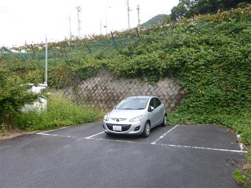
駐車場の周りはツユクサが生い茂っている。
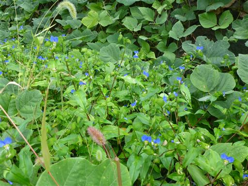
準備を整えたら登山口目指して歩き始める。
国道20号より少し低い場所のため、ここから少し車道を登る必要がある。
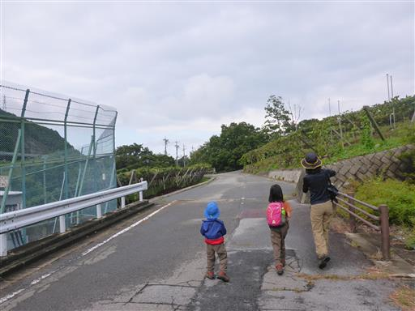
この辺りはブドウ栽培が盛ん。周囲はブドウ畑だらけだ。
おいしそうなブドウがたくさんなっている。
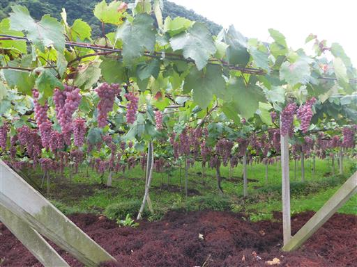
橋の欄干もブドウの模様になっている。
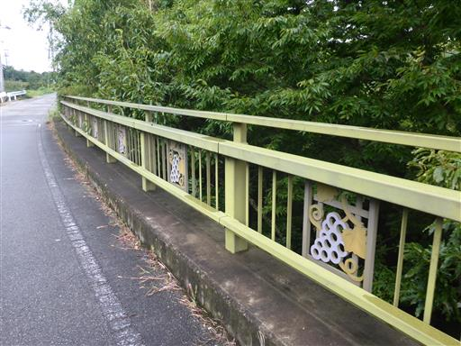
足下ではアサガオが蔓を伸ばしている。
娘が夏休みに育てていた植物で馴染みがある花だ。
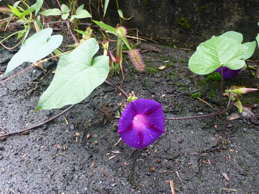
大善寺の近くの登山道から山に入っていく。
以前は大善寺を経由して登ったのだが、有料化に伴い登山口が変わったようだ。
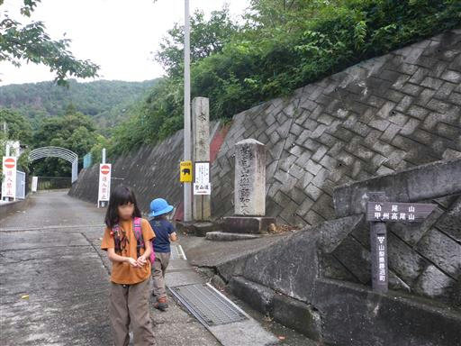
少し登ると五所大神社にたどり着く。少々寂れた神社だ。
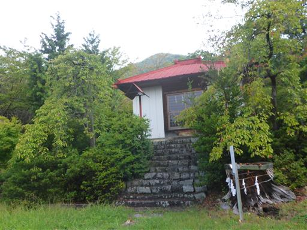
登山道を歩き始めてすぐに害獣除けの柵が現れる。
扉のロックは高い位置にあるため、息子では手が届かない。
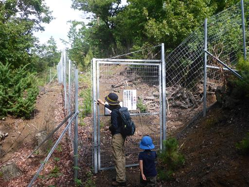
少し登ると展望が広がる。眼下に広がるのはブドウ畑。
上から見下ろすとブドウの木には見えない。
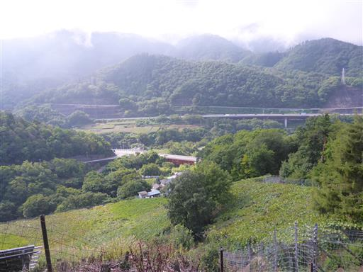
こちらはソーラーパネル。霧が出やすそうな場所だが、十分な発電量があるのだろうか？
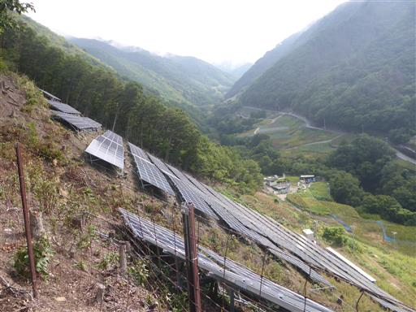
登山道は少々荒れ気味。木を潜ったり跨いだりしながら登って行く。
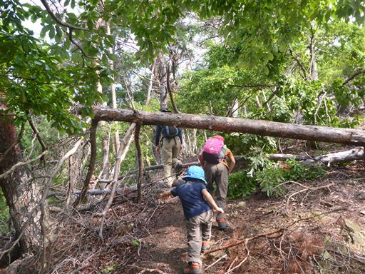
急坂を登りきると送電線鉄塔に到着する。

ここからは傾斜が緩くなるのでほっと一息だ。
登山道が雲に覆われ始める。
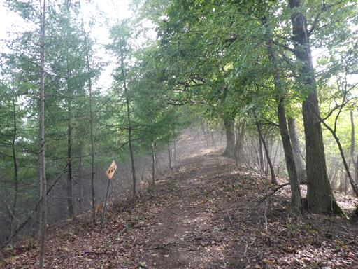
これから目指す山々は雲に覆われている。
本日は思ったほど天候が良くない。

松の木が倒れまくっている。松くい虫の影響だろうか？
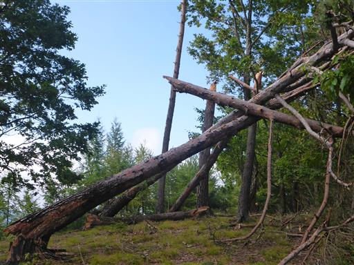
地面に大きな実が落ちているのを発見。一瞬ブドウかと思ったがちょっと違う。
一体何の実だろうか？
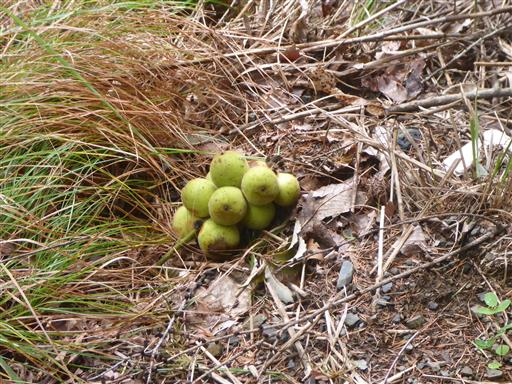
見上げると、比較的小さな木にたくさんの実がなっている。
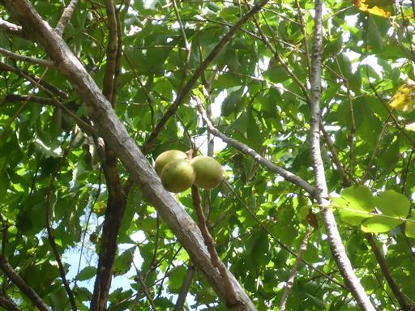
子供たちが地面の虫を発見。何がいるか分かるだろうか？
答えはカマキリとバッタ。
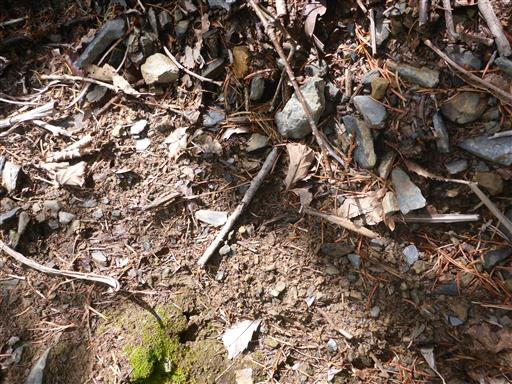
しばらく進むと今度は栗拾い。こうなると、なかなか前に進まない。
比較的きれいな栗が落ちている。
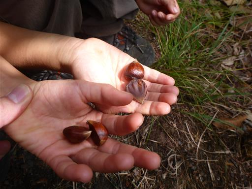
こちらも見上げてみると栗がいっぱいなっている。
こんなのが落ちてきて頭に当たると、かなり痛そうだ。
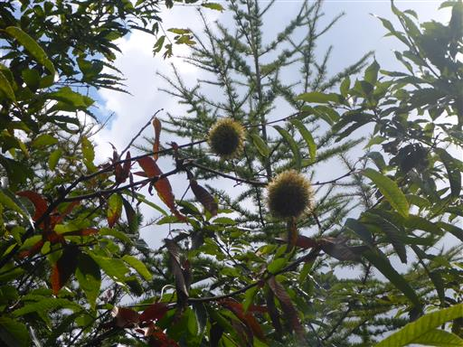
多くのこぶを持った木。おそらく病気なのだろう。
少し気持ち悪い。
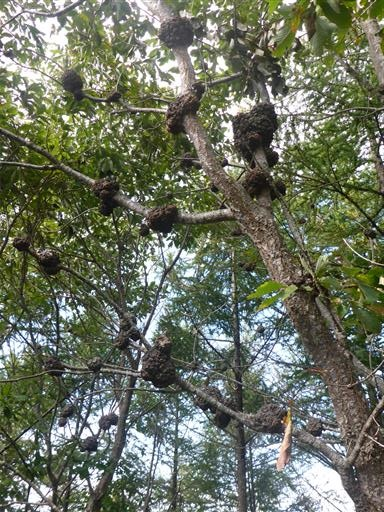
少し展望が広がって遠くの山々が見える。
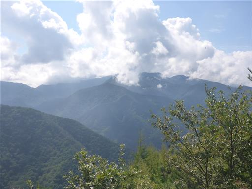
登山道にスズメバチが現れる。これでスズメバチは本日3度目。
いずれも倒木に群がって離れようとしないので、迂回を強いられる。
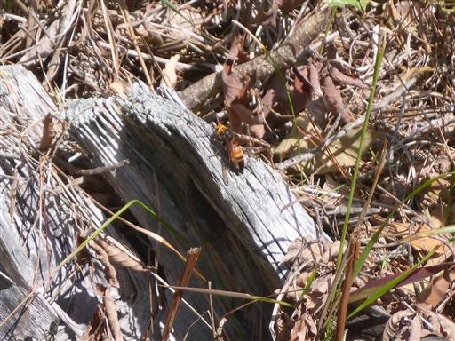
倒木があったりスズメバチがいたりと、この登山道はあまり歩かれていないのだろうか？
道は草に覆われていて、あまり踏まれていないようだ。
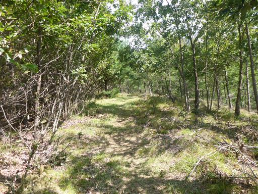
眼下に甲府盆地の美しい街並みが見渡せる。
残念ながら背後に聳える南アルプスは雲の中だ。
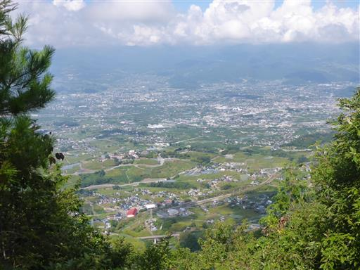
車道を横切る。ここまで来ると山頂まであともう少しだ。
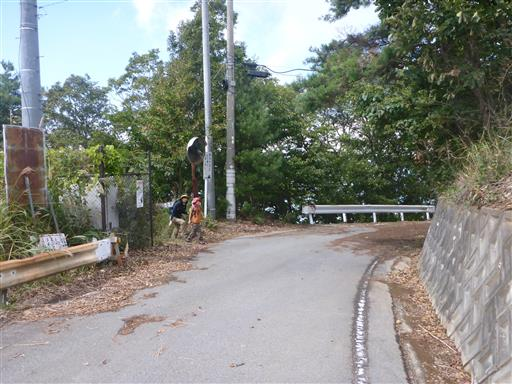
剣ヶ峰を超えて甲州高尾山に到着する。標高1106m。
山頂は大グループに占拠されている。
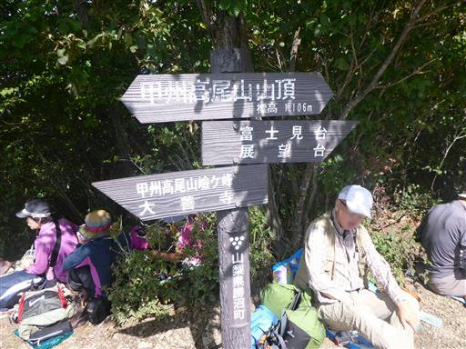
昼食をとっていると、山頂を素通りしたグループが隣のピークで休憩をとっているのが見える。
あちらの方が展望が良さそうなので、あちらで昼食をとればよかった。
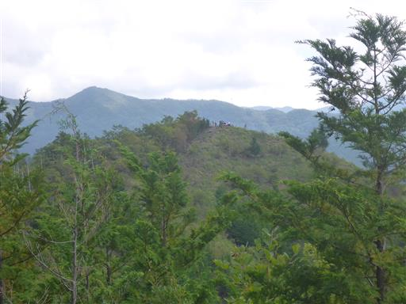
昼食後に息子がそのピークに行きたいと言い出したので、少し足を延ばして行ってみる。
こちらのピークの方が10mほど標高が高い。
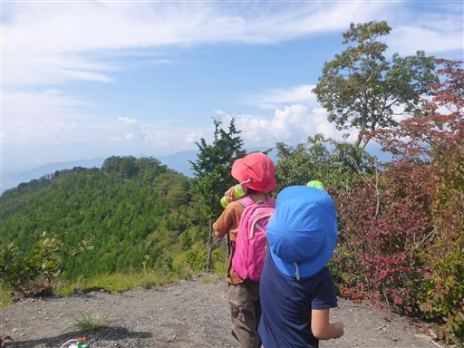
このピークからは大きく展望が広がる。だいぶ雲もとれてきた。
見えているのは笹子雁ヶ腹摺山方面だ。
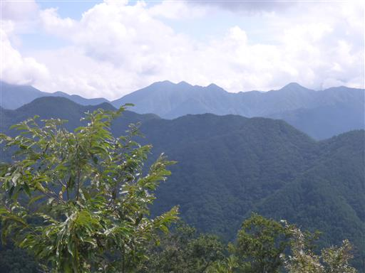
眼下に目をやると、中央道の上り線があり得ないほど混雑している。
ほとんど動いていないので事故だろう。帰りが思いやられる。
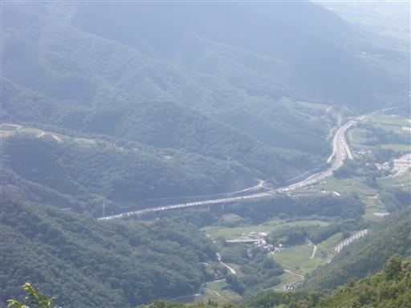
少し休憩したら下山を開始する。
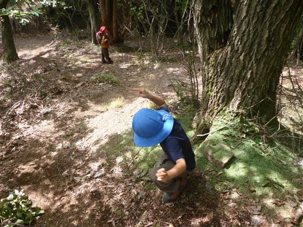
カラマツの葉が地面に積もっている。ものすごい量だ。

登りの時に見かけたスズメバチが、まだ同じ場所で群がっている。
こんなに長い時間、一体何をしているのだろう？
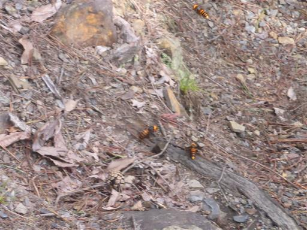
急な斜面を下り切り無事下山する。

国道20号沿いにある勝沼第一ぶどう園でお土産にブドウを購入。
帰りの中央道は流れ始めていたが、それでもかなり時間がかかった。乗用車が燃えていたようだ。
本日は気温が高く、急登が続いたため、息子にとっては少々ハードな登山だった。
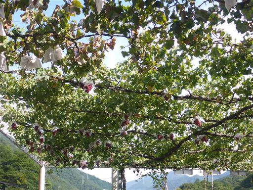